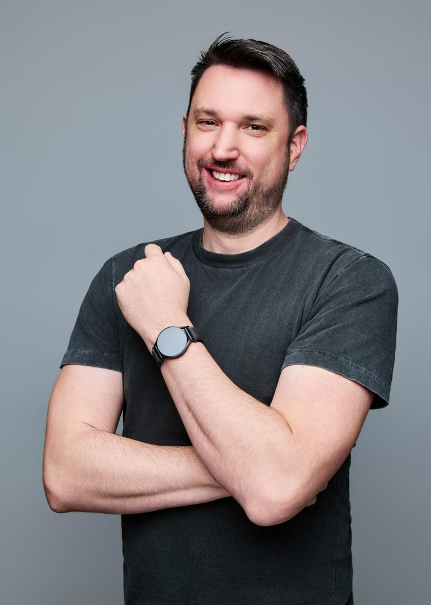
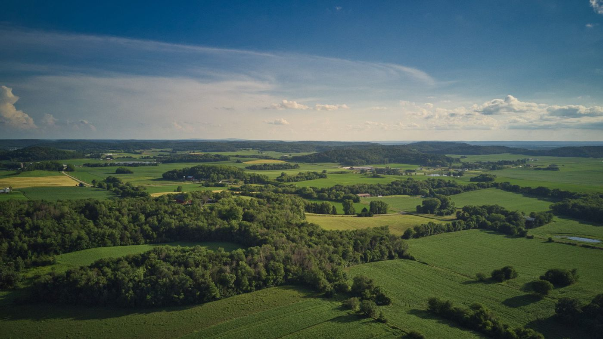
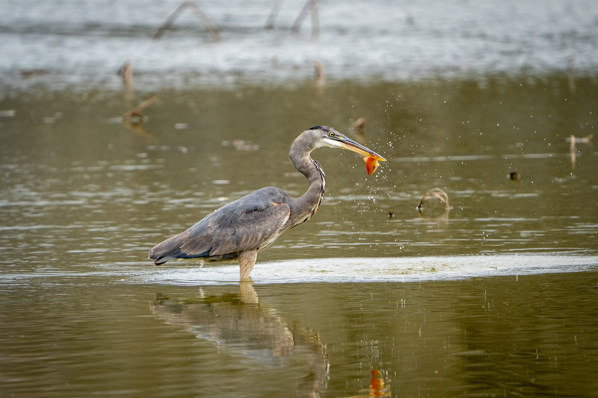
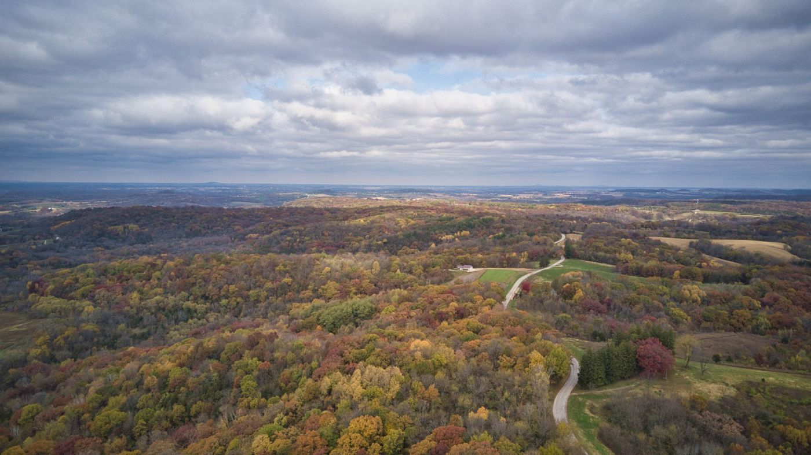
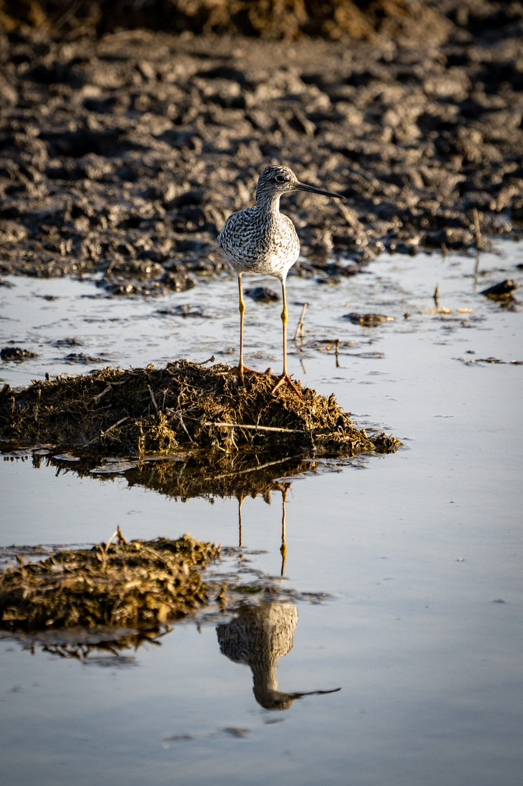

DevOps Engineer with 8+ years in financial services — Kubernetes, Terraform, Azure, and observability.

I've spent the last decade making software and infrastructure boring in the best way — automated, observable, and reliable. These days I work across Kubernetes (AKS and Nutanix K8s), Terraform, and Helm, shipping container images from source to production through Azure Container Registry. I've owned everything from serverless Azure Functions to large-scale website hosting, and I build the Elastic-based observability — APM, anomaly detection, automated alerting — that turns "something feels off" into an answer.
I like working with people as much as machines: I led a company-wide consolidation of ~15 teams onto a single agile platform, migrated every company repo and build pipeline to GitHub, and recently wrapped an Emerging Leadership Program focused on coaching and strengths-based leadership.
Led the migration of a customer-facing web banking application from on-premises infrastructure to Azure App Service.
Consolidated ~15 departments from siloed projects into a single company-wide Scrum platform, with shared standards, documentation, and reporting.
Migrated all company repositories and build pipelines from Azure DevOps to GitHub, including an automated workflow that converts legacy pipeline YAML.
Built Elastic-based APM, anomaly detection, and agent-driven alerting that correlates application and log data into actionable signals.
Recreational these days — aerial shots of Wisconsin's fields and shorelines.
Sony glass, DJI air, and a RPi timelapse running somewhere.
Design, slice, print, iterate.
Arduino, sensors, and projects that live on the bench too long.
Custom rigs, mostly for gaming, occasionally for guilt.
Shavings on one weekend, hop water on the other.
Aerial and wildlife photography — fields that look like circuit boards, wetland mornings, and the occasional egret in a hurry.




Questions, projects, or drone-shot comparisons — my inbox is open.